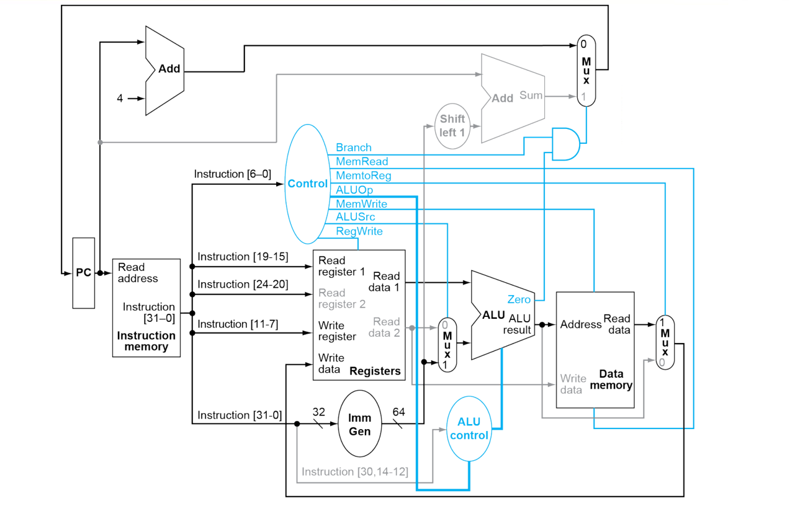
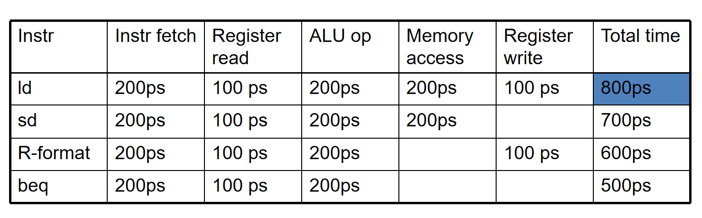
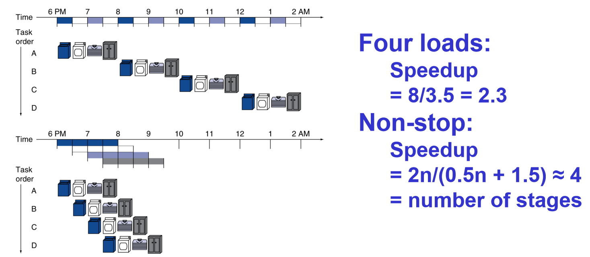
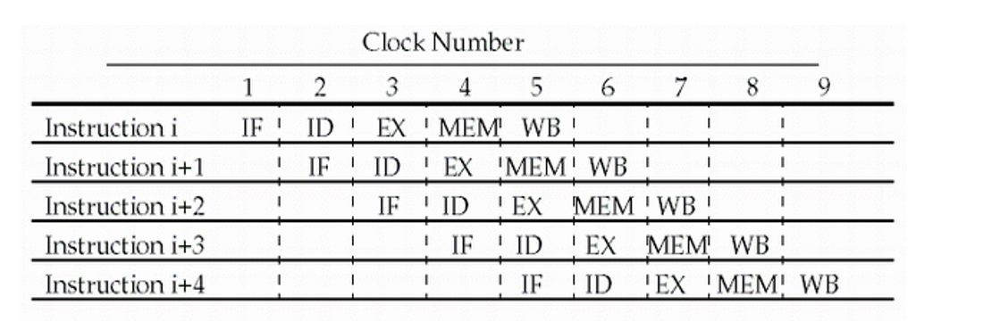
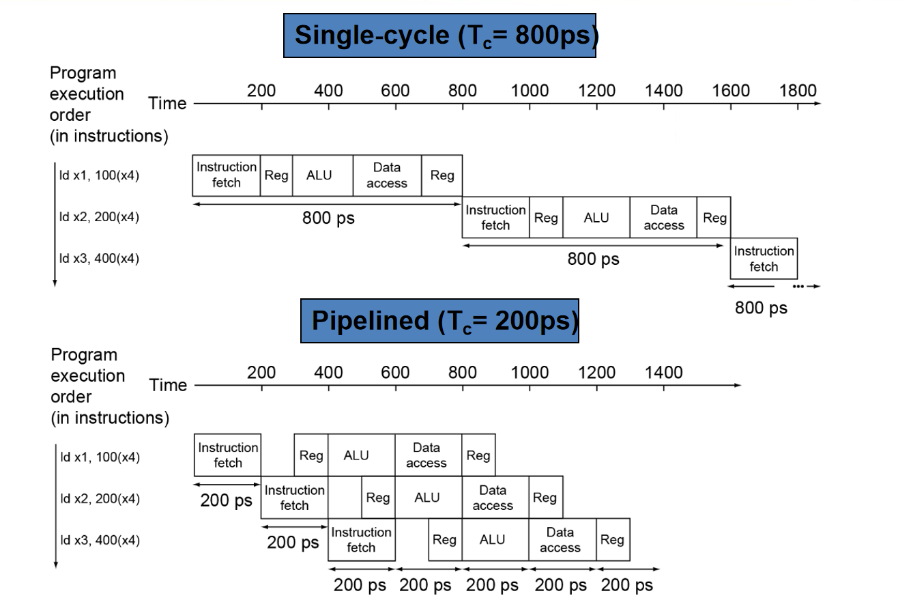
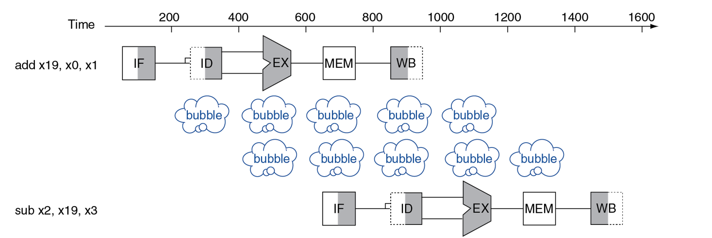
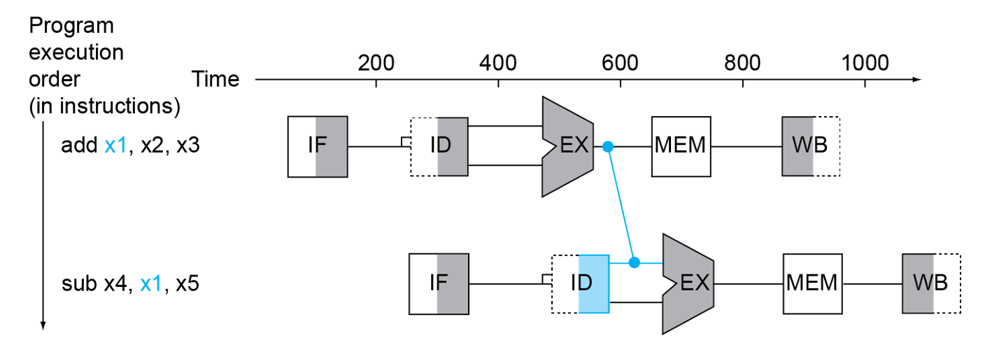
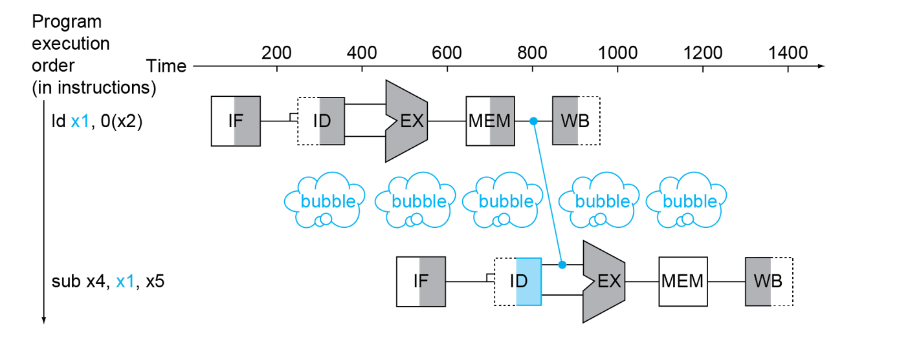
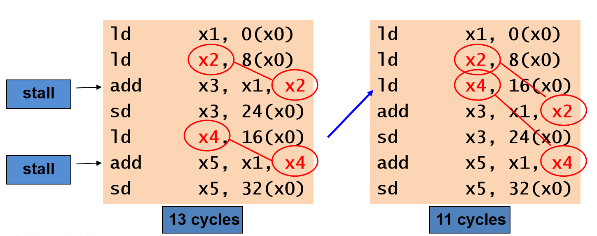
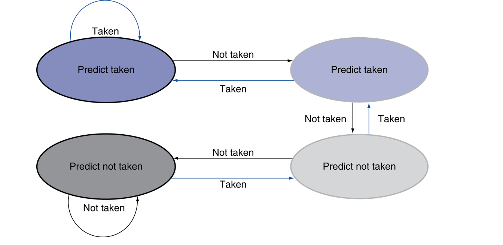

计算机组成4-2-1:流水线的结构
第一部分：单周期模型的“原罪”——对时间的浪费
在我们急于抛弃单周期模型之前，让我们先给它做一次精准的“尸检”，量化地分析它到底有多糟糕。这将为我们理解流水线的必要性提供最直接的动机。
1.1 定量分析：关键路径与时钟周期的确定
我们假设处理器中不同功能单元的延迟如下（这是一个非常经典的、接近实际的简化模型）：
- 存储器访问 (Instruction/Data Memory)：200 ps (皮秒)
- ALU及加法器：200 ps
- 寄存器堆读/写：100 ps
- 其他组合逻辑（如MUX, 控制单元）延迟忽略不计。
根据上节课的知识，单周期处理器的时钟周期必须容纳下最长的那条指令的执行路径，这条路径被称为关键路径。让我们来分析几条典型指令的执行总耗时：
-
R-Type (
add,sub等)- 路径：取指(IM) -> 读寄存器(Reg) -> ALU计算 -> 写寄存器(Reg)
- 耗时：
200ps (IM) + 100ps (Reg Read) + 200ps (ALU) + 100ps (Reg Write) = 600 ps
-
Load (
ld)- 路径：取指(IM) -> 读寄存器(Reg) -> ALU计算地址 -> 访存(DM) -> 写寄存器(Reg)
- 耗时：
200ps (IM) + 100ps (Reg Read) + 200ps (ALU) + 200ps (DM) + 100ps (Reg Write) = 800 ps
-
Store (
sd)- 路径：取指(IM) -> 读寄存器(Reg) -> ALU计算地址 -> 访存(DM)
- 耗时：
200ps (IM) + 100ps (Reg Read) + 200ps (ALU) + 200ps (DM) = 700 ps
-
Branch (
beq)- 路径：取指(IM) -> 读寄存器(Reg) -> ALU比较
- 耗时：
200ps (IM) + 100ps (Reg Read) + 200ps (ALU) = 500 ps

结论显而易见：ld指令是我们的“短板”，它需要800ps。因此，整个处理器的时钟周期 $T_{clk}$ 必须设置为 800ps。这意味着，即使是只需要500ps的beq指令，也必须占用一个完整的800ps周期，其中有300ps的时间，处理器是在“无所事事”地空转！
1.2 问题的本质与设计原则的违背
单周期处理器的“原罪”在于：
- 资源利用率极低：在一个时钟周期内，当指令在执行ALU计算时，取指单元和数据存储器是空闲的；当在访存时，ALU是空闲的。每个功能单元在大部分时间里都在“摸鱼”。
- 设计理念的违背：它违背了计算机设计的一个重要原则——加速大概率事件 (Making the common case fast)。在典型的程序中，简单的算术指令和分支指令出现的频率远高于访存指令。而我们却让这些“常客”去迁就最慢的“稀客”。
- 扩展性差：如果我们想加入一条更复杂、更慢的指令（比如浮点乘法），整个处理器的时钟周期都会被进一步拉长，所有指令的性能都会因此下降。
能否为不同指令设置不同的时钟周期？ 理论上可以，但硬件实现会变得异常复杂，需要复杂的异步电路设计，这在现代通用处理器中是不可行的。我们需要一个更通用、更优雅的解决方案。
第二部分：流水线的思想——从串行到并行
既然无法缩短最慢指令的总时长，也无法为不同指令定制周期，那我们能否换一个思路？我们能否让多个指令重叠执行，从而提高单位时间内的指令“吞吐率”？
这就是流水线 (Pipelining) 的核心思想。
2.1 生活中的类比：洗衣房的智慧
想象一下，有四位同学（A, B, C, D）要洗衣服，洗衣过程分为四个步骤：
- 洗衣 (30分钟)
- 烘干 (40分钟)
- 叠衣 (20分钟)
- 放入衣柜 (10分钟)
串行（单周期）方案： 同学A完成所有四步后，同学B才能开始。总时长 = $4 \times (30+40+20+10) = 400$ 分钟。
流水线方案：
- 当同学A的衣服进入烘干机时，同学B就可以开始使用洗衣机了。
- 当A的衣服在叠衣，B的在烘干时，C就可以开始洗衣了。
- 各个设备（洗衣机、烘干机）得到了充分利用。

性能分析：
- 延迟 (Latency)：单个同学完成洗衣的总时间并没有减少，甚至可能因为切换的开销略有增加。
- 吞吐率 (Throughput)：单位时间内完成洗衣任务的同学数量大大增加了！
- 加速比 (Speedup)：理想情况下，如果每个步骤时间相同，N个任务的加速比将接近步骤的数量。
这个简单的例子揭示了流水线的本质：通过将一个任务分解成多个独立的阶段，并让不同任务的不同阶段并行执行，从而提高系统的整体吞吐率，而不是降低单个任务的延迟。
2.2 将流水线思想应用于RISC-V处理器
我们的指令执行过程，天然就可以被划分为上节课提到的五个经典阶段：
- IF (Instruction Fetch): 取指
- ID (Instruction Decode): 译码并读取寄存器
- EX (Execute): 执行运算或计算地址
- MEM (Memory Access): 访问数据存储器
- WB (Write Back): 将结果写回寄存器
设计思路：
- 我们将单周期的数据通路，沿着这五个阶段的边界，“切”成五段。
- 在每个阶段的末尾，我们插入一组特殊的寄存器，称为流水线寄存器 (Pipeline Registers)。
- 这些寄存器的作用，就像是洗衣房中不同步骤之间的“中转篮子”，它们负责暂存一个阶段的输出，并作为下一个阶段的输入，在下一个时钟周期提供给下一级。
- 时钟周期不再由最长指令的总时间决定，而是由最长的那个流水线阶段的延迟决定。

上图完美地展示了流水线的并行性。在时钟周期5，有五条不同的指令同时处于流水线的五个不同阶段，处理器的所有功能单元都在满负荷工作！
2.3 流水线的性能潜力：定性与定量分析
定性分析：
- CPI的变化：在充满指令的稳定状态下，每个时钟周期都有一条指令完成。因此，理想CPI从单周期的1（但周期很长），变成了流水线的1（但周期很短）。
- 吞吐率的提升：假设单周期时钟为800ps，流水线每个阶段最长为200ps（即访存或ALU）。流水线的时钟周期可以缩短到200ps。吞吐率提升了 $800/200 = 4$ 倍！

定量分析：
-
加速比公式： $$ \text{Speedup} = \frac{\text{Time}{\text{non-pipelined}}}{\text{Time}{\text{pipelined}}} = \frac{N \times T_{clk_single}}{(N + k - 1) \times T_{clk_pipe}} $$ 其中，$N$是指令数，$k$是流水线级数。当$N$很大时，$(N+k-1) \approx N$，公式简化为： $$ \text{Speedup} \approx \frac{T_{clk_single}}{T_{clk_pipe}} = \frac{\text{最长指令总延迟}}{\text{最长阶段延迟}} $$
-
一个关键前提：阶段平衡 流水线的性能提升，高度依赖于各个阶段的延迟是否均衡。如果一个阶段耗时400ps，其他四个都耗时100ps，那么时钟周期只能是400ps，性能提升将大打折扣。平衡流水线阶段是设计中的一个重要艺术。
总结流水线的核心优势： 流水线并不减少单条指令的延迟 (Latency)，甚至会因为流水线寄存器的开销而略微增加。但是，它通过并行化，极大地提高了指令的吞吐率 (Throughput)。
第三部分：流水部分的“诅咒”——冒险 (Hazards)
天下没有免费的午餐。流水线在带来巨大性能提升的同时，也引入了三种非常棘手的副作用，我们称之为冒险 (Hazards)。冒险是指在流水线中，下一条指令无法在下一个时钟周期正常开始执行的情况。它们是流水线设计者必须面对和解决的核心难题。
3.1 结构冒险 (Structural Hazards)
- 定义：当两条或多条指令在同一个时钟周期，需要争用同一个硬件资源时，就会发生结构冒险。
- 经典例子：统一的存储器
- 假设我们的处理器只有一个存储器，既用于取指，也用于数据访问。
- 观察流水线时空图：在时钟周期4，指令
i处于MEM阶段（需要访问数据存储器），而指令i+3处于IF阶段（需要访问指令存储器）。 - 如果只有一个存储器，它们就会发生冲突！指令
i+3的取指操作必须暂停 (Stall) 一个周期，等待指令i用完存储器。
- 解决方案：
- 资源复制：这是最简单粗暴但有效的方法。我们设计分离的指令存储器和数据存储器（或者在现代CPU中，是分离的指令Cache和数据Cache，即哈佛结构）。这样，IF阶段和MEM阶段的访存操作就可以并行进行，互不干扰。
- 流水化资源：如果某个资源无法复制（例如一个复杂的浮点运算单元），可以尝试将其本身也设计成流水线式的，使其可以在多个周期内接收新的任务。
3.2 数据冒险 (Data Hazards)
-
定义：当一条指令需要使用到前一条尚未执行完毕的指令的结果时，就会发生数据冒险。这是最常见也最需要精巧设计的冒险。
-
代码示例：
add x19, x0, x1 // 指令1: 计算x19 sub x2, x19, x3 // 指令2: 使用x19 -
问题分析：
add指令在WB阶段（第5个周期）才会把结果写入寄存器x19。- 但是，
sub指令在ID阶段（第3个周期）就需要从寄存器堆中读出x19的值。 - 此时，
x19中的值还是旧的！sub指令读到了一个错误的数据。 
-
朴素的解决方案：暂停 (Stall / Bubble)
- 我们可以让流水线暂停。当检测到数据冒险时，让
sub指令以及其后的所有指令在流水线中“冻结”几个周期，直到add指令完成WB阶段。 - 这种暂停在流水线中通常通过插入空操作 (NOP) 或称为气泡 (Bubble) 来实现。
- 缺点：严重影响性能！为了等待一个数据，流水线可能要空转好几个周期，吞吐率急剧下降。
- 我们可以让流水线暂停。当检测到数据冒险时，让
-
更聪明的解决方案：数据前递/旁路 (Forwarding / Bypassing)
- 核心思想：我们为什么非要等到数据被写回寄存器堆再使用呢？
add指令的结果在EX阶段结束时就已经在ALU的出口处产生了。这个结果比WB阶段早了整整两个周期！ - 实现：我们可以增加一些额外的数据通路和MUX，将ALU的输出结果**直接“转发”**给下一条指令的ALU输入端，绕过寄存器堆。
- 
- 通过数据前递，
sub指令可以在其EX阶段及时拿到add指令的计算结果，流水线无需暂停，继续全速运行！
- 核心思想：我们为什么非要等到数据被写回寄存器堆再使用呢？
-
数据冒险的特殊情况：Load-Use Hazard
- 数据前递虽好，但并非万能。考虑以下情况：ld x1, 0(x2) // 指令1: 从内存加载数据到x1 sub x4, x1, x5 // 指令2: 立即使用x1
- 问题分析：
ld指令的数据，直到MEM阶段结束时才从数据存储器中准备好。- 而
sub指令在EX阶段开始时就需要这个数据。 - 即使我们从MEM阶段的输出进行前递，数据到达
sub的ALU输入时也已经晚了一个周期。我们无法“向后穿越时间”来前递数据。 
- 解决方案：暂停+前递
- 这是唯一无法完全通过前递解决的数据冒险。我们必须让
sub指令暂停一个周期。 - 暂停后，
ld指令进入WB阶段，sub进入EX阶段。此时，ld在MEM阶段结束时产生的数据，就可以顺利地前递给sub的EX阶段了。 - 这种“加载后立即使用”的冒险需要一次强制的1周期停顿。
- 这是唯一无法完全通过前递解决的数据冒险。我们必须让
-
编译器的角色：指令调度 (Instruction Scheduling)
- 既然硬件层面有1周期的停顿惩罚，我们能否在软件层面避免它？
- 优秀的编译器会进行指令调度，尝试在
ld指令和使用其结果的指令之间，插入一条或多条不相关的指令，来填补这个“气泡”。 - 
- 这是硬件和软件协同优化性能的绝佳范例。
3.3 控制冒险 (Control Hazards)
-
定义：由分支、跳转等改变程序控制流的指令引起的冒险。处理器无法在分支结果出来之前，确定下一条要取指的指令的地址。
-
问题分析：
- 在我们的5级流水线中，
beq指令在EX阶段（第3周期）才能计算出比较结果，在MEM阶段（第4周期）才能确定是否跳转并更新PC。 - 但是，取指单元（IF阶段）在第2个周期就需要知道下一条指令的地址。
- 当我们处理
beq指令的ID阶段时，我们已经取了beq的下一条指令(PC+4)。当我们处理beq的EX阶段时，我们又取了beq的下下条指令(PC+8)。 - 如果
beq最终判断需要跳转，那么我们刚刚辛苦取来的这两条指令都是错误的，必须被冲刷 (Flush) 掉，并从正确的分支目标地址重新开始取指。 - 这将导致多个周期的性能损失。
- 在我们的5级流水线中，
-
解决方案（由简单到复杂）：
- 冻结或暂停流水线 (Stall)：在ID阶段译码出是分支指令后，立即冻结流水线，直到分支结果确定。简单但性能损失巨大。
- 分支预测 (Branch Prediction)：与其傻等，不如猜测分支的结果。
- 最简单的预测：预测不跳转 (Predict Not Taken)。我们总是假设分支不发生，继续取PC+4的指令。如果猜对了，流水线没有任何损失。如果猜错了（分支实际发生了），我们再冲刷掉错误路径上的指令，并从目标地址重新取指。这被称为分支预测惩罚 (Misprediction Penalty)。
- 提前计算：为了减少惩罚，我们可以将分支判断和目标地址计算的硬件，从EX阶段提前到ID阶段。这样，如果猜错，只需要冲刷掉一条已经进入IF阶段的指令，惩罚减小。
- 静态预测：编译器根据一些启发式规则进行预测。例如，向后跳转的循环分支，大概率会发生；向前跳转的错误处理分支，大概率不发生。
- 动态预测：这是现代处理器的核心技术。用硬件（如分支历史表 Branch History Table, BHT）记录每条分支指令过去的执行行为，并据此预测它下一次的行为。例如，一个简单的1位预测器记录上次是否跳转。更强大的2位饱和计数器可以容忍一次偶然的错误行为，只有在连续两次预测错误时才翻转预测状态。 
- 延迟分支 (Delayed Branch)（一种历史性的 ISA 级解决方案）：在ISA层面规定，分支指令后面的那个指令槽位（称为延迟槽 Delay Slot）中的指令，无论分支是否发生，都总是被执行。编译器负责找到一条有用的、不影响分支结果的指令填充进去。如果找不到，就填充一个NOP。这种方法将分支的控制惩罚转移给了编译器，简化了早期流水线硬件的设计，但在现代深流水线中已不常用。
- 数据前递虽好，但并非万能。考虑以下情况：